彻底掌握Makefile（三）
前言
在前面的文章彻底掌握Makefile（一）和彻底掌握Makefile（二）当中，我们简要的介绍了一些常见的makefile使用方法，在本篇文章当中我们将继续介绍一些makefile当中的常见用法。
Makefile中与文件相关的函数
dir与notdir函数
file = ./files/a.c
fdir = $(dir $(file))
nfdir = $(notdir $(file))
main: demo.c
echo $(fdir)
echo $(nfdir)
dir函数主要书获取文件路径当中的目录部分，而notdir函数主要是获取文件路径当中文件名的部分，执行上面的makefile结果如下所示：
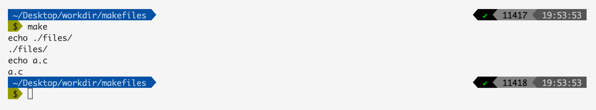
suffix函数
这个函数主要是用于获取文件的后缀名。
file = ./files/a.c
fdir = $(dir $(file))
nfdir = $(notdir $(file))
name = $(suffix $(file))
main: demo.c
echo $(fdir)
echo $(nfdir)
echo $(name)
上面的makefile执行结果如下下图 所示：
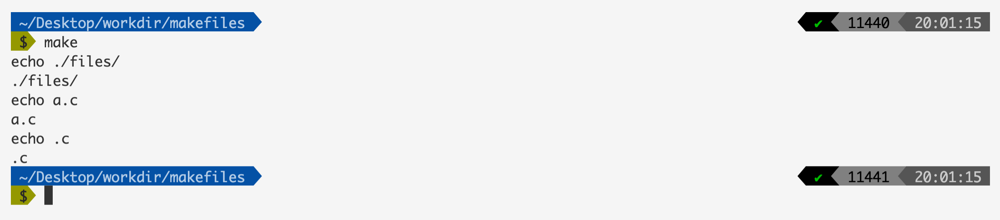
basename
这个函数用于获取文件路径当中除去后缀名的部分。
file = ./files/a.c
base = $(basename $(file))
main: demo.c
echo $(base)
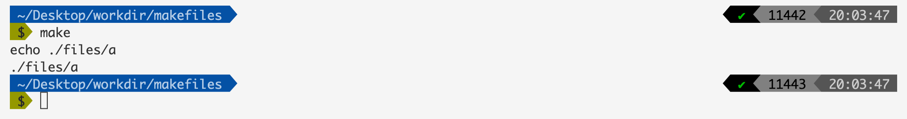
addsuffix
这个函数主要是给文件加上后缀的。
file = ./files/a.c
base = $(addsuffix .c, $(file))
main: demo.c
echo $(base)
上面的代码执行结果如下：
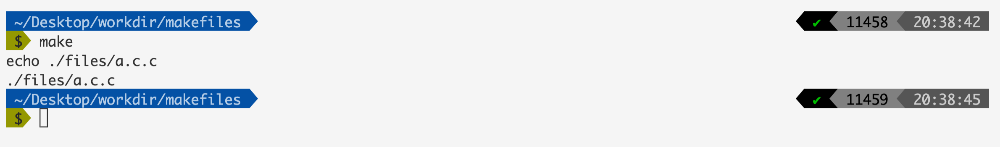
上面的结果就表示在文件的末尾加上了对应的后缀名。
addprefix
这个函数的主要作用就是在字符串的前面加上一串字符。
file = files/a.c
base = $(addprefix ./src/main/, $(file))
main: demo.c
echo $(base)
上面的makefile执行结果如下图所示：
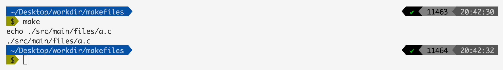
循环函数foreach
foreach函数的主要使用规则为：
$(foreach <var>,<list>,<text>)
我们直接使用一个例子来说明这个情况：
files = a.c b.c c.c d.c
new_files = $(foreach n, $(files), $(n)pp)
main: demo.c
echo $(new_files)
上面的makefile输出结果如下图所示：
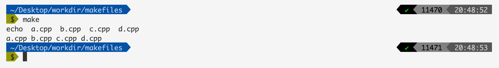
foreach函数会将files当中的字符串先按照空格、tab键、回车换行符进行分割，然后将分割后的值一个一个的放入变量n当中，然后会产生一个字符串$(n)pp，最终将这些字符串通过空格拼接起来并且赋值给new_files，这才会有最终的结果。
上面的过程对应一个python代码如下所示：
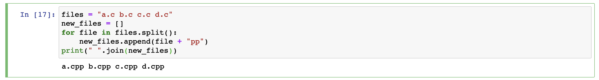
call函数
call函数在makefile当中可以用于调用我们自定义的一个表达式，他的语法个数如下面所示：
$(call <expression>,<parm1>,<parm2>,...,<parmn>)
表示定义的表达式的名字。 表示第n个参数，我们在 当中可以使用 $(n)进行引用。
我们现在有一个需求就是将两个字符中间加上多个横杠，比如下面的makefile。
a=a.c
b=b.c
c=$(a)-------$(b)
main: demo.c
echo $(c)
上面的makefile执行结果如下图所示：
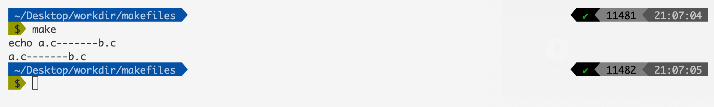
但是如果我们想要重复实现这个功能的话，我们就不需要每次都去写这样一个表达式，而是我们应该写一个表达式然后进行调用。
a=a.c
b=b.c
c=$(1)-------$(2) # 定义表达式c $(1) 表示使用第一个参数 $(2) 表示使用第二个参数
main: demo.c
echo $(call c, $(a), $(b)) # c 就是定义好的表达式 这里调用表达式c
上面的makefile输出结果和上面一样：
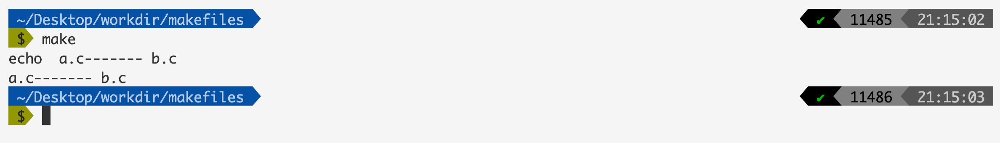
在makefile当中使用shell函数
我们在makefile的表达式当中可以使用shell的函数。
比如现在我们有一个文件叫做test.txt，文件的内容如下所示：
a.c b.c c.c d.c
我们的makefile内容如下：
content=$(shell cat test.txt) # 将shell命令的输出内容赋给content
main: demo.c
echo $(content) # 输出content
上面的makefile执行结果如下图所示：
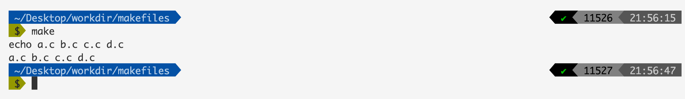
origin函数
origin这个函数主要是返回变量的定义方式，使用格式如下：
$(origin <variable>) # 其中 variable 是变量名字 这里不需要使用 $ 符号去引用
这个函数的输出结果又下面这些值：
undefined
如果 <variable> 从来没有定义过，origin函数返回这个值 undefined
default
如果 <variable> 是一个默认的定义，比如“CC”这个变量。
GNU make默认变量：
- AR－－＞归档维护程序的名称，默认值为ar
- ARFLAGS－－＞归档维护程序的选项
- AS－－＞汇编程序的名称，默认值为as
- ASFLAGS－－＞汇编程序的选项
- CC－->C编译器的名称，默认为gcc
- CPP－－＞C预编译器的名称
- CCFLAGS－－＞C编译器的选项
- CPPFLAGS－->C预编译的选项
- CXX－－＞C＋＋编译器的名称，默认为g++
- CXXFLAGS－－＞C＋＋编译器的选项
- FC－－＞FORTRAN编译器的名称，默认为f77
- FFLAGS－－＞FORTRAN编译器的选项
environment
variable是一个环境变量。
file
如果 <variable> 这个变量被定义在Makefile中。
command line
如果 <variable> 这个变量是被命令行定义的。
override
如果 <variable> 是被override指示符重新定义的，关于override的使用，请查看本文彩蛋部分。
现在我们举一个例子，去看看上面这些值对应的例子：
override var = aaaa
file=file
main: demo.c
echo $(origin file) # makefile 内部定义的
echo $(origin data) # 命令行定义的
@echo $(origin var) # override 重写
@echo $(origin JAVA_HOME) # JAVA_HOME 是一个环境变量
@echo $(origin CXX) # 默认定义的变量
我们现在使用make命令测试一下上面的makefile输出结果：
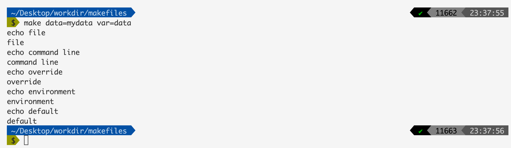
error函数
在makefile当中我们可以使用error函数让makefie停止执行。当我们有需求：让在某种条件下让makefile停止编译
data=data
ifeq ($(data), data)
$(error "data == data")
endif
main: main.c
gcc main.c
现在我们执行makefile，输出结果如下：
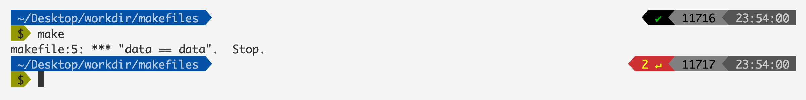
还有一个函数warning使用方法和上面一样用于产生警告。
彩蛋
@符号
有时候在makefile当中我们不想输出某些命令（如果不进行设置makefile会输出每一条我们执行过的命令），比如下面的makefile。
main: demo.c
echo hello world
上面的makefile输出结果为：

现在我们不想输出echo hello world这条命令，我们可以使用@进行修饰，在makefile当中如果一条命令使用@进行了修饰，那么这条命令就不会输出。
main: demo.c
@echo hello world
上面的makefile输出结果如下：
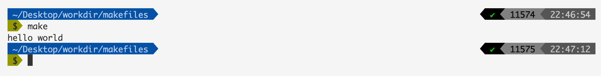
override使用
在使用make命令的时候可以进行变量的设定，这个变量我们可以在makefile文件当中使用：
main: demo.c
@echo $(var) # 使用变量 var
我们现在输入make命令并且指定参数然后查看结果：
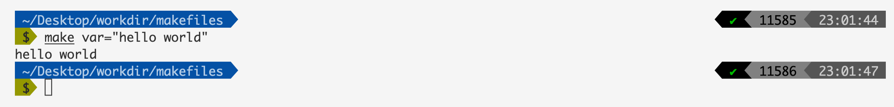
可以看到我们指定的变量在makefile当中可以使用了。
但是如果在我们的makefile当中也有一个变量叫做var那么makefile当中的var就会被覆盖。比如像下面这个例子一样：
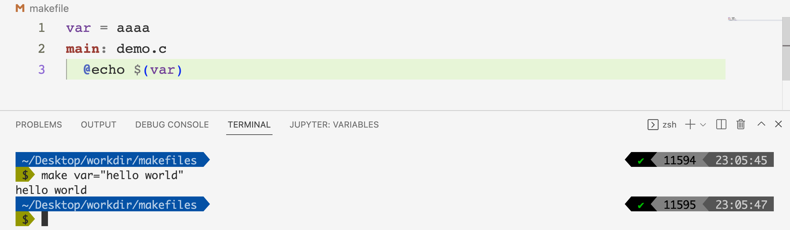
如果我们想让我们自己的变量起作用的话我们可以使用override：
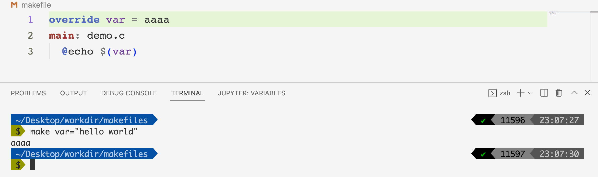
总结
在本篇文章当中主要给大家介绍了Makefile当中一些常用的函数的使用，整体比较简单，大家可以对照着makefile和结果自己实现一遍。
以上就是本篇文章的所有内容了，我是LeHung，我们下期再见！！！更多精彩内容合集可访问项目：https://github.com/Chang-LeHung/CSCore
关注公众号：一无是处的研究僧，了解更多计算机（Java、Python、计算机系统基础、算法与数据结构）知识。